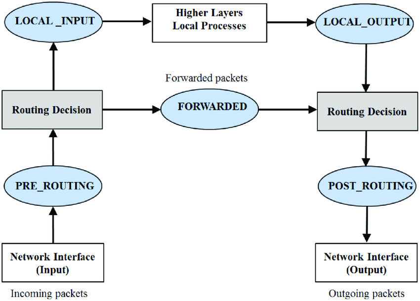

Introduction
This book contains all I know as a software engineer. From the content you can see how miserable it is!
Security
TLS
mTLS
Encrypted private key
openssl rsa -in encrypted-private-key.pem -out decrypted-private-key.pem \
-passin file:passphrase.txt
mTLS support in curl
To specify client’s certificate, we should do as follows,
curl ... \
--key <private-key-file> \
--cert <client-certificate-file> \
--pass <plain-text-passphrase>
First, note that private key and certificate are passed in as file name, but
passphrase is passed in as plain text. You can tell the difference from
curl’s cmd line
option parsing logic
and
ssl config.
Why? This is because internally, curl does not do TLS by itself. All work is
delegate to Openssl. See
code.
Openssl’s C interface just works this way. It takes private key and certificate
file name, but passphrase as string value in its APIs.
SSO
Use google single signon
The are many ways to use google signon. It has basically two steps.
- create google client id and secret in google cloud console. Note, make sure
add both
http:localhostandhttp:localhost:<port number>toAuthorized JavaScript origins, otherwise you will see 401 error. I struggled a few hours on this part. - Use some library to get the JWT and user info
For the second step, there are many approaches. The native approaches is
following
google identity service
that uses google js library to fetch id_token and sends it to backend service
for further login.
Meanwhile, different frameworks provide different utility modules to handle google login. In python, authlib is the most popular library for sso. It has Flask, Django, starlette and other integration as well. See https://developers.google.com/identity/protocols/oauth2/openid-connect#createxsrftoken
Some pitfalls for google oauth2 secret
-
Quote from https://developers.google.com/identity/protocols/oauth2#expiration
A Google Cloud Platform project with an OAuth consent screen configured for an external user type and a publishing status of “Testing” is issued a refresh token expiring in 7 days. so for testing, token will expire in 7 days.
-
See
fastapi-google-signin-example
Buzzfeed sso
Buzzfeed sso is a proxy that you set it up and then you can use it to authenticate multiple websites.
Configurations
This part confused me a lot in the beginning. sso-proxy uses a lot of packages and libraries to glue various components together to load the configuration file. Let’s see the evils inside!
As an end user, I only need to define a config map which contains a yaml file
upstream_configs.yml that lists the backend services as below
apiVersion: v1
kind: ConfigMap
...
data:
upstream_configs.yml: |-
- service: hello-world
default:
from: hello-world.tryevergreen.com
to: http://hello-world.default.svc.cluster.local
- service: one-off-master-staging
default:
from: staging-oneoff.tryevergreen.com
to: http://one-off-master.staging-oneoff.svc.cluster.local:8004
options:
flush_interval: 100ms
...
Then in the deployment spec, I configure the volume and environment variable
apiVersion: apps/v1
kind: Deployment
spec:
template:
spec:
containers:
- image: buzzfeed/sso:v2.1.0
env:
- name: UPSTREAM_CONFIGS
value: /sso/upstream_configs.yml
volumeMounts:
- name: upstream-configs
mountPath: /sso
volumes:
- name: upstream-configs
configMap:
name: upstream-configs
So from this setup, you naturally think that there is a stage in the main
function that reads environment variable UPSTREAM_CONFIGS and gets the file
path and then unmarshals the yaml file to a golang struct. You are basically
right. The configuration is done by this line
config, err := proxy.LoadConfig()
But if you search UPSTREAM_CONFIGS in the repo, you will be disappointed
because at nowhere this variable is looked up! OK! Don’t panic. Let’s follow
the entry point. The LoadConfig function has these
two lines
conf := config.NewConfig()
err := conf.Load(env.NewSource())
Let’s read env.NewSource() first. It turns out that sso uses a package called
go-micro which is a framework to build micro services in go. From the
description there, you understand that this magic env store splits any
environment variable by underscore and then construct a nested configuration
tree. In our case, it will generate
{"upstream": {"configs": "/sso/upstream_configs.yml"}}. It iterates
all environment variables,
so you cannot find where UPSTREAM_CONFIGS is read in sso repo. After
conf.Load(env.NewSource()), conf contains a dictionary
{"upstream": {"configs": "/sso/upstream_configs.yml"}}.
Then let’s read a few lines below
decoder, err := mapstructure.NewDecoder(&mapstructure.DecoderConfig{
...
err = decoder.Decode(conf.Map())
sso uses package mapstructure to convert the dictionary above to the
Configuration struct.
Let’s come back to main
function
err = proxy.SetUpstreamConfigs(
&config.UpstreamConfigs,
config.SessionConfig.CookieConfig,
&config.ServerConfig,
)
This part is the core part that reads the config yaml file and populates the
upstream services. The core function down the call chain is
this,
which unmarshals the yaml file to a ServiceConfig struct. When I read about
this part, I keep asking myself: where are from and to fields in
UpstreamConfig? Actually, they are hidden inside
RouteConfig
because it has annotation yaml:",inline" :(
RouteConfig RouteConfig `yaml:",inline"`
So now, I understand all the pieces of how config yaml is read and mapped to
the Configuration struct. What a pity that I spent about two hours jumping
around!
Another thing to note is how mapstructure maps a string value to a slice. See
here.
internal vs external provider url
Sample of sso-proxy provider configuration is as follows,
- name: PROVIDER_URL_EXTERNAL
value: https://sso-auth.tryevergreen.com
- name: PROVIDER_URL_INTERNAL
value: http://sso-auth.sso.svc.cluster.local
The relevant code is
here.
You see that the internal url wil be used for redeem, refresh, validate
and profile endpoints. If not specified, internal url will reuse exernal url.
How to build & test
docker buildx build --platform linux/amd64 --push -t dingxiong/sso:0.0.3 .
sasl
SASL stands for “Simple Authentication and Security Layer”.
The best material about SASL is probably gsasl. SASL is a framework, not an authentication implementation. When using SASL, you are responsible for picking up a underlying authentication mechanism. Here, we discuss a few commonly used mechanisms.
PLAIN
This is simplest authentication mechanism: (user id, clear-text password). It is so simple that you can finish reading its standard doc in five minutes. However, as it communicates clear-text password to server, it should be used on top of a secure transportation layer, i.e., TLS. I think most Kafka users must have heard about SASL/PLAIN.
CRAM-MD5
CRAM stands for Challenge Response Authentication Mechanism.
AES (Advanced Encryption Standard)
AES is block cypher. It describe the process to encrypt a 128bit data block. However, AES itself does not specify how to encrypt a stream of bytes. You may think a naive way is to divide the byte stream into 128bit, i.e., 16 bytes chunks, and pad the last chunk if its size is less than 16 bytes, but nobody does it this way as it is easy to crack. (TODO: read more to verify this statement). Usually, people choose a block cypher mode to accomplish AES. Basically, you can think of this cypher mode will use and update an initialization vector between encrypting each 128bit block.
Many different block cypher modes exit. The good paper on this subject is MODES OF OPERATION OF THE AES ALGORITHM. Below we just cover the most popular ones.
GCM mode: Galois/Counter mode
AES-GCM-SIV
CORS (Cross-Origin Resource Sharing)
preflight request
Network
Netcat
Pitfalls
Different parameters
There are two programs: nc, ncat. They are basically the same thing but
with different implementation. So when searching document online, make sure you
are reading the right one. The trap I once got into is that one online page
tells me that nc -l 8000 listens for TCP packets for port 8000. But actually,
it did not work. I need to use nc -l -p 8000.
Service ip vs pod ip
In kubernetes, you can use nc to test connectivity between two different pods
to verify firewall rules. (This is super useful when you are dealing with AWS
security groups!)
In one pod, you run nc -l -p 8010. On another pod, you can run
nc 172.31.66.141 8010. The ip address here is the pod’s ip. Everything works
fine: whatever you typed here will show up in the first pod. However, then you
think: OK. pod ip works, could I use the service ip?
k get svc sleep
NAME TYPE CLUSTER-IP EXTERNAL-IP PORT(S) AGE
sleep ClusterIP 10.100.180.201 <none> 80/TCP
You run nc 10.100.180.201 8010 and type a few messages. Noting happens! This
is because service ip only forward packet to certain port. In this case it
is 80. We can directly test port 80:
# nc 10.100.180.201 80
dfa
dfads
HTTP/1.1 400 Bad Request
content-length: 11
content-type: text/plain
date: Wed, 15 Feb 2023 17:05:05 GMT
server: istio-envoy
connection: close
Bad Request
As you see after typing some nonsense messages dfa, dfads, the server yells
back: “what is this bullshit. It is not http protocal!”.
Iptables
You can find numerous iptables tutorials online.
Inside k8s
NAT table Pod-to-Service packets get intercepted by the PREROUTING chain
Here is the iptable from an AWS EKS ec2 instance.
[ec2-user@ip-172-31-61-34 ~]$ sudo iptables -L
Chain INPUT (policy ACCEPT)
target prot opt source destination
KUBE-SERVICES all -- anywhere anywhere ctstate NEW /* kubernetes service portals */
KUBE-EXTERNAL-SERVICES all -- anywhere anywhere ctstate NEW /* kubernetes externally-visible service portals */
KUBE-FIREWALL all -- anywhere anywhere
Chain FORWARD (policy ACCEPT)
target prot opt source destination
KUBE-FORWARD all -- anywhere anywhere /* kubernetes forwarding rules */
KUBE-SERVICES all -- anywhere anywhere ctstate NEW /* kubernetes service portals */
Chain OUTPUT (policy ACCEPT)
target prot opt source destination
KUBE-SERVICES all -- anywhere anywhere ctstate NEW /* kubernetes service portals */
KUBE-FIREWALL all -- anywhere anywhere
Chain KUBE-EXTERNAL-SERVICES (1 references)
target prot opt source destination
REJECT tcp -- anywhere anywhere /* data/airflow: has no endpoints */ ADDRTYPE match dst-type LOCAL tcp dpt:32584 reject-with icmp-port-unreachable
Chain KUBE-FIREWALL (2 references)
target prot opt source destination
DROP all -- anywhere anywhere /* kubernetes firewall for dropping marked packets */ mark match 0x8000/0x8000
DROP all -- !ip-127-0-0-0.us-east-2.compute.internal/8 ip-127-0-0-0.us-east-2.compute.internal/8 /* block incoming localnet connections */ ! ctstate RELATED,ESTABLISHED,DNAT
Chain KUBE-FORWARD (1 references)
target prot opt source destination
DROP all -- anywhere anywhere ctstate INVALID
ACCEPT all -- anywhere anywhere /* kubernetes forwarding rules */ mark match 0x4000/0x4000
ACCEPT all -- anywhere anywhere /* kubernetes forwarding conntrack pod source rule */ ctstate RELATED,ESTABLISHED
ACCEPT all -- anywhere anywhere /* kubernetes forwarding conntrack pod destination rule */ ctstate RELATED,ESTABLISHED
Chain KUBE-KUBELET-CANARY (0 references)
target prot opt source destination
Chain KUBE-PROXY-CANARY (0 references)
target prot opt source destination
Chain KUBE-SERVICES (3 references)
target prot opt source destination
REJECT tcp -- anywhere ip-10-100-109-33.us-east-2.compute.internal /* devops/jenkinszip:http has no endpoints */ tcp dpt:webcache reject-with icmp-port-unreachable
REJECT tcp -- anywhere ip-10-100-192-135.us-east-2.compute.internal /* spinnaker/spin-deck: has no endpoints */ tcp dpt:cslistener reject-with icmp-port-unreachable
REJECT tcp -- anywhere ip-10-100-193-242.us-east-2.compute.internal /* monitoring/prometheus-kube-prometheus-prometheus:web has no endpoints */ tcp dpt:websm reject-with icmp-port-unreachable
REJECT tcp -- anywhere ip-10-100-125-144.us-east-2.compute.internal /* spinnaker/spin-rosco: has no endpoints */ tcp dpt:simplifymedia reject-with icmp-port-unreachable
REJECT tcp -- anywhere ip-10-100-3-44.us-east-2.compute.internal /* spinnaker/spin-redis: has no endpoints */ tcp dpt:6379 reject-with icmp-port-unreachable
REJECT tcp -- anywhere ip-10-100-90-84.us-east-2.compute.internal /* spinnaker/spin-igor: has no endpoints */ tcp dpt:radan-http reject-with icmp-port-unreachable
REJECT tcp -- anywhere ip-10-100-153-132.us-east-2.compute.internal /* spinnaker/spin-clouddriver: has no endpoints */ tcp dpt:afs3-prserver reject-with icmp-port-unreachable
REJECT tcp -- anywhere ip-10-100-102-112.us-east-2.compute.internal /* data/airflow: has no endpoints */ tcp dpt:vat reject-with icmp-port-unreachable
REJECT tcp -- anywhere ip-10-100-247-73.us-east-2.compute.internal /* kube-system/aws-load-balancer-webhook-service: has no endpoints */ tcp dpt:https reject-with icmp-port-unreachable
REJECT tcp -- anywhere ip-10-100-131-198.us-east-2.compute.internal /* spinnaker/spin-orca: has no endpoints */ tcp dpt:us-srv reject-with icmp-port-unreachable
REJECT tcp -- anywhere ip-10-100-179-223.us-east-2.compute.internal /* devops/jenkinszip-agent:agent-listener has no endpoints */ tcp dpt:50000 reject-with icmp-port-unreachable
REJECT tcp -- anywhere ip-10-100-156-48.us-east-2.compute.internal /* spinnaker/spin-gate: has no endpoints */ tcp dpt:8084 reject-with icmp-port-unreachable
REJECT tcp -- anywhere ip-10-100-90-212.us-east-2.compute.internal /* spinnaker/spin-gate-public: has no endpoints */ tcp dpt:http reject-with icmp-port-unreachable
REJECT tcp -- anywhere ip-10-100-51-18.us-east-2.compute.internal /* elastic-system/elastic-webhook-server:https has no endpoints */ tcp dpt:https reject-with icmp-port-unreachable
REJECT tcp -- anywhere ip-10-100-179-244.us-east-2.compute.internal /* spinnaker/spin-front50: has no endpoints */ tcp dpt:webcache reject-with icmp-port-unreachable
REJECT tcp -- anywhere ip-10-100-119-202.us-east-2.compute.internal /* spinnaker/spin-deck-public: has no endpoints */ tcp dpt:http reject-with icmp-port-unreachable
REJECT tcp -- anywhere ip-10-100-5-109.us-east-2.compute.internal /* spinnaker/spin-echo: has no endpoints */ tcp dpt:8089 reject-with icmp-port-unreachable
Database
Clickhouse
Build
MacOs
See https://clickhouse.com/docs/en/development/build-osx
First install required dependencies, then
cd ClickHouse
mkdir build
export PATH=$(brew --prefix llvm)/bin:$PATH
export CC=$(brew --prefix llvm)/bin/clang
export CXX=$(brew --prefix llvm)/bin/clang++
cmake -G Ninja -DCMAKE_BUILD_TYPE=RelWithDebInfo -DCMAKE_EXPORT_COMPILE_COMMANDS=1 -S . -B build
cmake --build build
TODO: this part is not finished. Clickhouse uses git submodules, and there are
so many things inside the contrib subfolder. I do not have enough disk for
it.
Configuration
Clickhouse has a
dedicated thread
watching configuration file updates. By default, it watch xml files inside
folder /etc/clickhouse-server/. This thread also combines all these xml files
into two xml files to
/var/lib/clickhouse/preprocessed_configs/config.xml/var/lib/clickhouse/preprocessed_configs/users.xml
On top of these generated files, you can see the source files used to assembly these generated files. See relevant code here.
Specifically for
Clickhouse operator, we can
add configuration at spec.configuration.settings section. The generated file
is /etc/clickhouse-server/config.d/chop-generated-settings.xml. One trick is
that you can use slash to generate parent-child relation. See the
example Kafka configuration.
config.xml
: location for data storage.
Build configurations
SELECT * FROM system.build_options WHERE name LIKE 'USE%';
┌─name────────────────────┬─value─┐
│ USE_EMBEDDED_COMPILER │ 1 │
...
│ USE_KRB5 │ 1 │
...
└─────────────────────────┴───────┘
40 rows in set. Elapsed: 0.008 sec.
From the result, you know #if USE_KRB5 evaluates to true.
parser
ParserCreateQuery
CREATE TABLE ... queries supports partition by, group by, ttl and etc.
How does this DDL string is parsed? The source code is
here.
The result is a
ASTStorage.
Kafka engine parameters
Source code is here.
Miscs
System tables
Clickhouse system table
system.partsstores parts of a table if this table has apartition byclause.system.zookeeperstores paths inside zookeepersystem.settingsstores configuration/settings.
JIT
Search USE_EMBEDDED_COMPILER.
MergeTree
A lot of different types of merge trees share the same implementation, just have different merge modes.
Replacing merge tree
ReplacingMergeTree can be used for upsert and delete.
TODO: figure out how select force performance bottleneck, and the progress.
See
https://kb.altinity.com/altinity-kb-queries-and-syntax/altinity-kb-final-clause-speed/
TODO: figure out how kafka stream works.
TODO: figure out how to bulk index data
TODO: figure out how replicatedMergeTree works.
Pinot
Pinot has a few components: broker, controller, server, zookeeper and
minion. See below pods after we installed pinot inside k8s.
$ k get pods
NAME READY STATUS RESTARTS AGE
pinot-broker-0 1/1 Running 0 7d22h
pinot-controller-0 1/1 Running 0 4d4h
pinot-minion-stateless-d5ff6f8f9-9vcts 1/1 Running 0 3d
pinot-server-0 1/1 Running 0 7d22h
pinot-server-1 1/1 Running 0 7d22h
pinot-zookeeper-0 1/1 Running 0 7d21h
pinot-tools
Pinot-tools is a subproject inside pinot repo, and it is the main entry to all services inside pinot, so it depends on all other subprojects.
In the above pods, except zookeeper pod, all run the same image
apachepinot/pinot:latest. The docker file is
here.
The entry point is ./bin/pinot-admin.sh. Initially, I was confused because I
could not find this script inside the repo. Then I read its
pom file.
Ah! it uses mojohaus/appassembler
to auto generate bash scripts. Quite a few script are generated, and
pinot-admin.sh is one of them. The pom file also specifies the corresponding
class for this script: org.apache.pinot.tools.admin.PinotAdministrator. This
Java file defines a lot of subcommands such as StartController, StartBroker
etc. OK. We learned that this is the entrance to all services and CLI tools
inside pinot.
We will talk about some important subcommands in the following sections.
AddTableCommand
AddTableCommand is used to create a new table or update an existing table. To
create a hybrid table, we specify both _offlineTableConfigFile and
_realtimeTableConfigFile. See
code.
The corresponding rest server is running inside pinot controller. The code is
here.
From validateConfig function you can see that in order to create a hybrid
table, the table name must be the same in both offline table config and
real-time table config.
Controller
What is running inside a controller.
$ ps -efww
/usr/lib/jvm/java-11-amazon-corretto/bin/java ... org.apache.pinot.tools.admin.PinotAdministrator StartController -configFileName /var/pinot/controller/config/pinot-controller.conf
What runs inside a Controller
Broker
Pinot broker is the API gateway of pinot. User’s requests are received by broker and then then routed to server using grpc.
$ ps -efww
/usr/lib/jvm/java-11-amazon-corretto/bin/java ... org.apache.pinot.tools.admin.PinotAdministrator StartBroker -clusterName pinot-zip -zkAddress pinot-zookeeper:2181 -configFileName /var/pinot/broker/config/pinot-broker.conf
SQL query
Pinot only supports queries on a single table. It does not support table joins. You can tell from the definition of PinotQuery class. Also, the explicit validation is here.
How query works for a hybrid table?
When a pinot broker receives a query request for a hybrid table, it will fork this query into two queries with a boundary time filter, and then send them to offline table and real-time table in parallel and then aggregate the two results. For example,
Original query: select * from t1 where a > 100;
=>
offline table query: select * from t1 where a > 100 and ts <= boundary_time;
real-time table query: select * from t1 where a > 100 and ts > boundary_time;
There are some blogs online talking about how this boundary time is chosen by pinot, we omit the details here. The code about how a hybrid table query is handled here.
How does Groovy transformation work?
https://github.com/apache/pinot/blob/e4220ecea583ff439363fd505497a3ec3cb3e4b6/pinot-segment-local/src/main/java/org/apache/pinot/segment/local/function/GroovyFunctionEvaluator.java#L62-L62
Here genericRow is just a map deserialized from Kafka message value (given we
use a Json decoder).
Operating System
Linux
Netfilter
Netfilter is a module inside Linux networking stack for filtering and transforming network packets.
Hooks
There are five different hooks.
enum nf_inet_hooks {
NF_INET_PRE_ROUTING,
NF_INET_LOCAL_IN,
NF_INET_FORWARD,
NF_INET_LOCAL_OUT,
NF_INET_POST_ROUTING,
NF_INET_NUMHOOKS,
NF_INET_INGRESS = NF_INET_NUMHOOKS,
};
Wikipedia has a complete diagram showing at which stages the hooks are called. Below is a simplified version. Diagram source is here. 
Note that each network namespace has its own netfilter hooks. See code. However, in Kubernetes, only the host has set up the iptable rules. The pod itself does not have any iptable rule. For example, below result is from one AWS EKS node.
[ec2-user@ip-172-31-95-245 ~]$ sudo ip netns exec cni-d0be060b-9f78-cbb5-d992-eb4a2bc066e9 iptables -t nat -L
Chain PREROUTING (policy ACCEPT)
target prot opt source destination
Chain INPUT (policy ACCEPT)
target prot opt source destination
Chain OUTPUT (policy ACCEPT)
target prot opt source destination
Chain POSTROUTING (policy ACCEPT)
target prot opt source destination
Register a table
The source code is here.
First interesting function is net_generic, which extract module specific data
from struct net. When you call register_pernet_subsys, it set the value
that points by pernet_operations.id. That is why
xt_pernet_id
is not initialized inside netfilter module.
Reference
- https://switch-router.gitee.io/categories/
Mac
Web
grpc
Plugin
Quote from plugin.proto:
// protoc (aka the Protocol Compiler) can be extended via plugins. A plugin is
// just a program that reads a CodeGeneratorRequest from stdin and writes a
// CodeGeneratorResponse to stdout.
//
// Plugins written using C++ can use google/protobuf/compiler/plugin.h instead
// of dealing with the raw protocol defined here.
//
// A plugin executable needs only to be placed somewhere in the path. The
// plugin should be named "protoc-gen-$NAME", and will then be used when the
// flag "--${NAME}_out" is passed to protoc.
Example study: python-betterproto
python-betterproto is a proto plugin that generates better, typed python code. The main entry is here and it uses a template to generate the output python code. Checkout the models file to see how the types are generated and injected to the Jinja2 template.
Binary protocol
The official doc describes
the binary protocol in depth. The variable-width integer format is quite
interesting. The python-betterproto repo has a
python implementation
of this protocol. Among the few binary encodings I have seen so far, protobuf
has the concisest format, but it only supports a small subset of data
structures. For example, it does not have built-in hashset type. According to
the protobuf official team,
supporting hashmap and hashset is “complicated” and hard to maintain :(. I do
not understand this statement. I probably do not appreciate the difficulty of
maintaining the backward and forward compatibility inside protobuf. On the
other hand, Kafka’s binary protobuf is more verbose, but is more expressive.
All I know about C++
C++ Standards
9 Declarations
Initializers
Initialization in C++ is complicated. See C++ standard. If you believe you are an expert in this area, then please answer the below questions.
- For
int arr[5];, are all 5 elements initialized to zero? - How about
int arr[5] = {};? - How about
int arr[5] = {1};? - For
vector<int> v(5);, are all 5 elements initialized to zero? - How about
vector<pair<int, int>> v(5);? - How about
array<int, 3> a;andvector<array<int, 3>> v(5);?
We need to cover at least concepts: default initialization,
zero initialization and value initialization.
Value Initialization
dcl.init#general-9 covers value initialization. It covers 3 cases: class type, array type and others.
Others
Let’s see the others’ case. The standard draft says
Otherwise, the object is zero-initialized.
Also, the zero initialization sections says
if T is any other scalar type, the object is initialized to the value obtained by converting the integer literal 0 (zero) to T;
So for int, float etc. value initialization means setting to zero. For
example, float x {}; explicitly sets x to 0. While float x; is default
initialization. How is a primitive default initialized? Section general-7.4
says no initialization is performed, which mean it is random, i.e., any garbage
value at that stack location.
So remember: scalar type value-initialization is zero-initialization.
Class type
If T is a class type, and if it has a user-provided constructor, then it this
constructor is used. If no such constructor, then it is zero initialized.
After that, the object is then default initialized.
For example, a simple class as below
struct A {
int x, y;
A(int y): y(y) {}
};
A a(5);
It has a user-provided constructor. It is first called, so y is initialized
to 5. How about x? It is default initialized and thus a random value. If we
change int x, y; to int x = 0; int y;, then it is default to zero.
Let’s see another case vecotr<int> v(5);. The vector self is
value-initialized. How about its elements? cppconference.com says “Constructs a
vector with count default-inserted objects of T. No copies are made.” What does
default-inserted means? The standard section
container.requirements#container.alloc.reqmts-2.2
says
An element of X is default-inserted if it is initialized by evaluation of the
expression `allocator_traits<A>::construct(m, p)`.
I checked the libc++ implementation. The final piece is this construct_at function. It basically says
return ::new (static_cast<void*>(__location)) _Tp(std::forward<_Args>(__args)...);
For this vector example, __args is empty, thus it is simplified to
::new int();. You can test it out1, this is value initialization!
Therefore, vector<int> v(5); initializes all elements to zero.
Why is new T(...) value initialized?
Let’s present the result first:
new T()→ value initialization (zeros for primitive types).new T→ default initialization (indeterminate for primitive types).
dcl.init#general-16.4 says “If
the initializer is (), the object is value-initialized.” But () cannot be
used as initializer in most cases. The few exceptions include the new
operator. Then expr.new#24 says “If the
new-initializer is omitted, the object is default-initialized. Otherwise, the
new-initializer is interpreted according to the initialization rules of
[dcl.init] for direct-initialization.” So it makes a huge difference if there
is () or not in the new expression.
Not just for int, it applies to vector<pair<int, int>> and
vector<tuple<int, float>> as well. The default constructor of pair and
tuple both value-initializes all elements. It is explicitly written in
cppconference.com. Similar goes with vector<array<int, N>>. The values are
all zero.
Array type.
Lastly, if T is an array type, then all its elements are value initialized.
Let’s analyze three cases:
int arr[5];: default initialization. These 5 elements are random.int arr[5] = {};: value initialization. Each element is value initialized. As said above, each one is zero-initialized. So this is equivalent toint arr[5] = {0, 0, 0, 0, 0};;int arr[5] = {1, 2};: value initialization. dcl.init#general-16.5 has a special paragraph for this case. Basically, elemente_iis copy initialized for1 <= i <= kand remaining elements are value-initialized. so this is equivalent toint arr[5] = {1, 2, 0, 0, 0};.
Answers to the questions at the beginning.
- No. The elements are random because
arris default initialized. - Yes. All zeros because
arris value initialized. - The first element is
1. The rest is0. - Yes. All zeros;
- Yes. All pairs have zero first and zero second parts.
array<int, 3> a;has random values.vector<array<int, 3>> v(5);are all initialized to zero.
-
Please do exactly as
int *p = new int();becauseint a();won’t give what you want. Checkout “most vexing parse”. ↩
Abbreviated function template
C++20 introduced a new syntax
Abbreviated function template.
The proposal is P1141R2. dcl.fct#21
provides some good examples. Basically, when you write a function parameter as
auto, the compiler automatically generates a template.
TODO: write more details about LLVM implementation.
Template
CTAD (Class template argument deduction)
greater<>
Many times, you can omit the type parameter in functional operators such as
std::greater<>. This is a new feature of C++14. See the implementation of
std::greater
code1
and
code2
for example. The trick is simple: the template parameter has a default void
value, and the void specialization perfectly forwards all arguments are
perfectly forward all arguments to operator()(...).
See n3421 for the motivation and why choosing this approach.
vector v;
We do not need to write boilerplate code like
vector<vector<int>> v(5, vector<int>(6)); any more. In C++17, we can simply
write vector v(5, vector<int>(6)); Thanks to
P0091R3: Template argument deduction for class templates.
Competitive Programming
Comparator
std::sort can pass a comp parameter at the end. If not specified, then it
is defaults to
std::less.
Sometimes, we want to sort nested containers, then how comparison works for them.
For vector, it is defined as
std::lexicographical_compare.
Basically, it compares element by element until a different one is found or one
vector goes out of range. In the latter case, the short vector is smaller.
std:string, std::deque, std::array std::pair and std::tuple are
similar to vector. They compare from the first element. If equal, then the
second, and the rest.
std::set and set::map define operator< as well. It is lexicographical
order as well. However, std::unordered_set and std::unordered_map only
define operator== and operator!=.
Comparator is also used extensively in sorted containers. std::set and
std::map has comparator template argument. There is a caveat that
Everywhere the standard library uses the Compare requirements, uniqueness is determined by using the equivalence relation. In imprecise terms, two objects a and b are considered equivalent if neither compares less than the other: !comp(a, b) && !comp(b, a).
The concrete code is
here.
Both set and map are implemented using red-black tree. When inserting a new
element, The case not a < b and not b < a means two keys are equal. If you
forget tie breaker, then you may end up with a undetermined behavior. For
example, in Dijkstra shortest path algorithm, we should define the comparator
as
auto comp = [&distances](const string &a, const string &b) {
if (distances[a] != distances[b])
return distances[a] < distances[b];
return a < b;
};
Radix Sort
libc++ has a good demonstration of the usage of radix sort. See code.
First, it is only used if the container value type is integral. It works for
int32, int64, etc but not floats, strings. Also, it supports negative integrals
as well. See
code.
Using int8 as an example, the trick numeric_limits<_Ip>::min() ^ value can be
explained by below table.
┌───────────────────┬───────────────────────┬──────────────────────────┬───────────────────┐
│ Original (Signed) │ Binary Representation │ XOR with -128 (10000000) │ Result (Unsigned) │
├───────────────────┼───────────────────────┼──────────────────────────┼───────────────────┤
│ -128 │ 10000000 │ 10000000 ^ 10000000 │ 00000000 (0) │
│ -127 │ 10000001 │ 10000001 ^ 10000000 │ 00000001 (1) │
│ -1 │ 11111111 │ 11111111 ^ 10000000 │ 01111111 (127) │
│ 0 │ 00000000 │ 00000000 ^ 10000000 │ 10000000 (128) │
│ 1 │ 00000001 │ 00000001 ^ 10000000 │ 10000001 (129) │
│ 127 │ 01111111 │ 01111111 ^ 10000000 │ 11111111 (255) │
└───────────────────┴───────────────────────┴──────────────────────────┴───────────────────┘
It maps [-128, 127] to [0, 255] without changing the relative order.
Second, in the competitive coding context, most people will do radix sorting by comparing the decimal digits, but libc++ compares bytes.
Third, radix sorting uses counting sort. The basic idea is counting the digit occurrence and do a prefix sum, so we know the position in the sorted array given a digit. The caveat is to maintain the stable order. If two numbers have the same digit, their relative order should not change. The pseudocode is
void counting_sort(vector<int>& arr, int exp) {
int n = arr.size();
vector<int> output(n), count(10, 0);
// frequency prefix sum.
for (int i = 0; i < n; i++) count[(arr[i] / exp) % 10]++;
for (int i = 1; i < 10; i++) count[i] += count[i - 1];
// start from the right end and decrease the frequency so we can maintain
// stable order.
for (int i = n - 1; i >= 0; i--) {
int digit = (arr[i] / exp) % 10;
output[count[digit] - 1] = arr[i];
count[digit]--;
}
arr = output;
}
Priority Queue
I do not like std::priority_queue because it does not provide the begin nor
end iterator. Later on, I learned a set of functions to deal with max heap
directly: make_heap, push_heap and pop_heap. I am very happy with it
because it allows me implementing priority queue on top of vector, and I can
iterate vector! Then I suspect the push/pop operation of std::priority_queue
is just a wrapper of push_heap/pop_heap. It is! See
code.
Constructors
A few examples.
priority_queue<int, std::vector<int>, std::greater<int>> pq;
auto comp = std::greater<int>{};
priority_queue<int, std::vector<int>, decltype(comp)> pq(comp);
vector v = {1, 2, 3, 5};
priority_queue<int> pq(v.begin(), v.end());
Just want to point out the last constructor has time complexity O(N), not
O(NlogN). Underneath, it just calls
std::make_heap.
Heap
What is a max heap?
-
A heap must be a complete binary tree, meaning all levels are fully filled except possibly the last level, which fills from left to right. If we store it in an array
arrwitharr[0]being the root, then left and right ofarr[i]arearr[2*i+1]andarr[2*i+2]. -
For max heap, every parent node is greater or equal to its children. Min heap is reverse.
The bottom-up heapify process takes O(N) steps.
void heapify_down(vector<int>& a, int n, int i) {
int mx = i, l = 2*i + 1, r = 2*i + 2;
if (l < n && a[l] > a[mx]) mx = l;
if (r < n && a[r] > a[mx]) mx = r;
if (mx != i) {
swap(a[i], a[mx]);
heapify_down(a, n, mx);
}
}
// Build max heap - O(n)
void make_heap(vector<int>& a) {
for (int i = a.size()/2 - 1; i >= 0; i--)
heapify_down(a, a.size(), i);
}
// Insert element at end and heapify up - O(log n)
void push_heap(vector<int>& a) {
int i = a.size() - 1;
while (i > 0 && a[(i-1)/2] < a[i]) { // parent at index (i-1)/2
swap(a[i], a[(i-1)/2]);
i = (i-1)/2;
}
}
// Remove max (root), move last to root, heapify down - O(log n)
void pop_heap(vector<int>& a) {
swap(a[0], a[a.size()-1]);
heapify_down(a, a.size()-1, 0);
}
Tree, Graph
A tree is an undirected, connected, and acyclic graph. It has n nodes, n-1
edges and is fully connected. This setup often shows up in competitive
programming.
Realizing it is a tree is helpful for DFS because often times the graph definition contains not only the child nodes but also the parent node. A simple trick to skip going back is
for (next : graph[node]):
if (next == parent_node) continue
Dijkstra
Dijkstra works for both directed and undirected graphs. Below is my favorite implementation.
// a graph with nodes 0, 1, ,, n-1.
// graph[i] is node i's neighbors and the corresponding distance/cost.
vector<int> shortest_distance(int from, const vector<vector<pii>>& graph) {
int n = graph.size();
vector<int> ds(n, INT_MAX); ds[from] = 0;
auto comp = [&ds](int a, int b) {
if (ds[a] != ds[b]) return ds[a] < ds[b];
return a < b;
};
set<int, decltype(comp)> q(comp);
for (int i = 0; i < n; i++) q.insert(i);
while(q.size()) {
int idx = *q.begin(); q.erase(q.begin());
if (ds[idx] == INT_MAX)
return ds; // we cannot reach remaining nodes, so we can return early.
for (const auto& [next, cost] : graph[idx]) {
int newc = ds[idx] + cost;
if (newc < ds[next]) {
q.erase(next);
ds[next] = newc;
q.insert(next);
}
}
}
return ds;
}
A few notes:
- Why use
setinstead ofpriority_queue? This is because the same vertex can be relaxed multiple times. Priority queue can process the same node unnecessarily. - When updating (i.e. remove + insert) a set element, remove first, and then update distance value.
- When you see
ds[idx] == INT_MAXwhen working on the queue, then it mean you encounter a node that is not accessible from the source node. The rest nodes were not accessible either. It is time to stop the algorithm. - The
whileloop executes exactlyntimes if all nodes are accessible, and less thanntimes if we abort early. This is because in each iteration we pop out one vertex.
Time complexity
The time complexity of above implementation is (E+V)*logE. Different
implementation can have different complexity.
E*logEcomes from two parts. We insert0:nto theset, The inside the loop, we pop out the beginning element.V*logEcomes from the relaxing stage. Theeraseandinsertoperation takeslogEtime, and we can have at mostVrelaxations. Each edge can be used at most once to relax a vertex.
It seems we can further simplify the expression to V*logE, but that is only
valid for dense graph. For a sparse graph E is much smaller than V, so in
general case, we do not know which one is larger. Then it is better to have
both.
Shortest Path
If you need the shortest path as well, you can simply update the parent information whenever relaxation happens.
Array implementation variant
cp-algorithms has a different
implementation which has time complexity E^2. It is better than the heap
implementation above for dense graph.
Segment Tree
A segment tree is a binary tree data structure used to efficiently answer range queries and perform range updates on an array — such as:
- Range sum
- Range minimum/maximum
- Range gcd, etc.
It’s designed to balance query speed and update speed, both in O(log N) time.
Implementation
A few conventions to reduce chances of mistakes.
- left branch is
[l, m], right branch is[m+1, r]. This avoids the index of out of range error for the middle point(l+r)/2.
Below is the naive implementation using explicit tree node.
struct Node;
struct Node {
int l, r;
shared_ptr<Node> left, right;
int s; // each node stores the sum of the range [l,r].
Node(int l, int r): l(l), r(r), s(0) {}
};
using NodeP = shared_ptr<Node>;
NodeP root;
void create_children(NodeP node) {
if (node->l != node->r) {
int m = (node->l + node->r) / 2;
if (not node->left) node->left = make_shared<Node>(node->l, m);
if (not node->right) node->right = make_shared<Node>(m+1, node->r);
}
}
int query(NodeP node, int l, int r) {
int m = (node->l + node->r) / 2;
create_children(node);
if (node->l == l and node->r == r) {
return node->s;
}
if (r <= m) return query(node->left, l, r);
else if (l > m) return query(node->right, l, r);
else return query(node->left, l, m) + query(node->right, m+1, r);
}
// Add val to the existing value at node i.
void update(NodeP node, int i, int val) {
create_children();
node->s += val;
if (node->l == i and node->r == i) return;
int m = (node->l + node->r) / 2;
if (i <= m) update(node->left, i, val);
else update(node->right, i, val);
}
Most segment tree code you see online uses an array to represent the tree. See
example.
An array int tree[2n+1] represent a tree with n nodes. tree[k] has
children tree[2k] and tree[2k+1]. Root node is tree[1]. However, I do not
like this implementation because it makes the interface more verbose. In my
implementation, struct Node contains the boundary information l and r.
With the array approach, the interface becomes
int query(int node, int start, int end, int l, int r). The first 3 parameters
are the node index, left and right boundary.
Lazy Propagation
The basic search and update operation has O(logN) complexity. It is not
efficient for range update. To make it O(logN) as well, we need lazy
propagation. A new helper push introduced. It realized the laziness at the
current node, and push the laziness down to its children. There are four places
we need push. First, at the beginning of a query, which is obvious. Then 3
places in update:
- At the beginning of
update. - At the base condition, i.e., query range equals node’s boundary. This is
where the performance improvement comes from. It avoids going deep to leaf
nodes, and simply put a marker in the current node saying: all nodes under
this subtree have an un-realized update amount
inc_amount. - Before we finally update current node’s value. This is pre-order traversal. We need to make sure the left and right children do not have any lazy value before we add them up. Otherwise, it would be wrong. This is most popular mistake I made!
Lazy Propagation
struct Node {
int l, r;
shared_ptr<Node> left, right;
int lazy = 0; // lazy update amount
int s;
Node(int l, int r): l(l), r(r), s(0) {}
};
using NodeP = shared_ptr<Node>;
NodeP root;
void create_children(NodeP node) {
if (node->l != node->r) {
int m = (node->l + node->r) / 2;
if (not node->left) node->left = make_shared<Node>(node->l, m);
if (not node->right) node->right = make_shared<Node>(m+1, node->r);
}
}
// realize laziness at current node and push it down the tree.
void push(NodeP node) {
if (node->lazy) {
node->s += node->lazy * (node->r - node->l + 1);
// only push down when it is not a leaf node.
if (node->l != node->r) {
create_children(node);
node->left->lazy += node->lazy;
node->right->lazy += node->lazy;
}
// remember to reset laziness.
node->lazy = 0;
}
}
int query(NodeP node, int l, int r) {
int m = (node->l + node->r) / 2;
create_children(node);
// realize laziness before query.
push(node);
if (node->l == l and node->r == r) {
return node->s;
}
if (r <= m) return query(node->left, l, r);
else if (l > m) return query(node->right, l, r);
else return query(node->left, l, m) + query(node->right, m+1, r);
}
void update(NodeP node, int l, int r, int inc_amount) {
int m = (node->l + node->r) / 2;
create_children(node);
push(node);
if (node->l == l and node->r == r) {
node->lazy += inc_amount;
push(node);
return;
}
if (r <= m) {
update(node->left, l, r);
} else if (l > m) {
update(node->right, l, r);
} else {
update(node->left, l, m);
update(node->right, m+1, r);
}
// make sure left and right do not have un-realized updates.
push(node->left); push(node->right);
node->s = node->left->s + node->right->s;
}
Fenwick Tree
A Fenwick tree (also called a Binary Indexed Tree or BIT) is a data structure that efficiently supports two operations on an array:
- Update: Modify a single element
- Prefix sum query: Calculate the sum of elements from index 0 to any given index
Both operations run in O(log n) time. So the difference between BIT and
segment tree is that the latter can define different aggregation; while the
former is only for prefix sum query. See the “Policy-Based Data Structures”
post about which to choose.
Implementation
The key insight is that any number can be represented as a sum of powers of 2. The Fenwick tree stores partial sums in a clever way where:
- Each index is responsible for a range of elements.
- The range size is determined by the lowest set bit in the index.
Index 2^k stores sum of index 2^{k-1} + 1, 2^{k-1} + 2, … 2^k. Note
index starts from 1 not 0. For example, in a Fenwick tree:
- Index 1 (binary: 001) stores sum of 1 elements:
001. - Index 4 (binary: 100) stores sum of 4 elements:
001,010,011,100 - Index 6 (binary: 110) stores sum of 2 elements:
110,101.
From this we can see given an index i, it must be responsible for the value
at index itself. Then we change the lowest set bit to zero, and sums up all
indices with combinations of the lower bits.
struct FenwickTree {
vector<int> bit;
int n;
// bit starts from index 1.
FenwickTree(int n) : n(n), bit(n + 1) {}
void update(int i, int delta) {
// why ++i? Indices are 1-indexed internally.
for (++i; i <= n; i += i & -i)
bit[i] += delta;
}
int query(int i) {
int sum = 0;
for (++i; i > 0; i -= i & -i)
sum += bit[i];
return sum;
}
int rangeQuery(int l, int r) {
return query(r) - (l ? query(l - 1) : 0);
}
};
The trick i & -i isolates the lowest set bit.
i + (i & -i): jump to next responsible index.i - (i & -i): jump to previous range.
To be honest, even with so many hints, I find it is still hard to remember this implementation.
Policy-Based Data Structures
Sometimes, we need a data structure that counts the number of integers greater
than a given value x and supports insertion. This mostly happen in a scenario
where you iterate through an array and calculate something for each element and
you would like the overall time complexity to be O(NlogN). You may think of
using std::set or std::multiset as below.
std::set<int> s;
auto iter = set.lower_bound(x);
num = std::distance(iter, s.end());
This won’t work as expected because std::distance has linear time complexity.
In order to make it O(logN), we need some metadata attached to each tree
node. Support you will design it. What metadata you would attach? The size of
the subtree under each node, right? That is the exact idea of policy-based data
structures.
The most commonly used one is the below pb_set and pb_map. See example
below.
#include <ext/pb_ds/assoc_container.hpp>
#include <ext/pb_ds/tree_policy.hpp>
using namespace __gnu_pbds;
template<class K>
using pb_set = tree<
K, // key type
null_type, // mapped type (null for set)
std::less<K>, // comparator
rb_tree_tag, // underlying tree = red-black tree
tree_order_statistics_node_update>; // enables order stats
template<class K, class V>
using pb_map = tree<
K,
V,
std::less<K>,
rb_tree_tag,
tree_order_statistics_node_update>;
int main() {
pb_set<int> s;
s.insert(1); s.insert(3); s.insert(5);
for (int i = 0; i <= 6; i++) cout << s.order_of_key(i) << endl;
// output: 0 0 1 1 2 2 3
}
Implementation Details
See the
interface description
and the implementation
here.
Basically, function order_of_key sums the metadata of all the left nodes of
the current node. The metadata is calculated in the operator()(...) function
which is the count of nodes in the subtree.
So we should expect __gnu_pbds::tree<...> should implement all std::map
methods, such as insert, erase and etc. But when I use it in practice, I
found it does not have emplace(...) method. What the hell! Since this is a
not a standardized container, this is totally possible. I decided to figure out
what interfaces it defines. With AI’s help, I figure out almost all its methods
inherit from
rb_tree_map.
Yes, the base class is determined by the tag you passed in the template.
rb_tree_map is a subclass of
bin_search_tree_map.
bin means binary. Make sense. Red-black tree is a binary tree.
From bin_search_tree_map, it gets
empty()size()max_size(): Returns the maximum possible number of elements.lower_bound(key)upper_bound(key)find(key): Finds an element with a specific key.begin()end()rbegin()rend()clear()
From rb_tree_map (the red-black tree specific operations), it gets
insert(value)operator[](key)erase(key)orerase(iterator)join(other_tree): Merges another tree into the current one.split(key, other_tree): Splits the tree into two based on a key.
Unfortunately, pb_ds is only implemented inside GCC/libstdc++. LLVM/libc++ does not have it.
Which to choose, Segment Tree, Fenwick tree or PB-DS?
All three options solve the similar problem. The TL;DR recommendations are summarized in below table.
| Scenario | Best Choice | Why |
|---|---|---|
| Need count ≤ X or count > X dynamically with arbitrary inserts | PBDS | Easiest, O(log N) both ways |
| Same need, but on macOS / LLVM (no PBDS) | Fenwick Tree | Works anywhere, just compress coordinates |
| Need range sums / updates on numeric ranges | Segment Tree | More flexible for numeric aggregations |
Trie
Trie tree is easy to implement. See below sample code for lower case English corps.
struct Node {
shared_ptr<Node> next[26];
int val = 0;
Node() {}
};
using NodeP = shared_ptr<Node>;
NodeP root = make_shared<Node>();
void insert(const string& word) {
NodeP node = root;
for (char c: word) {
int idx = c - 'a';
if (not node->next[idx]) node->next[idx] = make_shared<Node>();
node = node->next[idx];
}
node->val = 1;
}
Optimizations
The naive explicit tree structure using pointers is not cache friendly. One
optimization is to use an array to represent the tree. The next vector should
store the index of the next node in in the array. This was definitely not
invented by me. Checkout
this reference.
struct Node {
int next[26], val = 0;
Node() { fill_n(next, 26, -1); } // very important to explicitly initialize it.
};
vector<Node> trie(1); // the first element is the root
void insert(const string& word) {
int node = 0; // root at index 0.
for (char c: word) {
int idx = c - 'a';
if (trie[node].next[idx] == -1) {
trie[node].next[idx] = trie.size();
trie.emplace_back(); // push the new node to the end of the array.
}
node = trie[node].next[idx];
}
trie[node].val = 1;
}
I asked chatgpt for more optimizations, and it suggests me that use a 2d array
trie[n][next] to go further with cache friendly. Too much for me!
Union-Find
Read below beautiful one-liner implementation of the find function.
vector<int> p; // fathers or parents
vector<int> ss; // size of each joint group.
int find(int i) {
/*
* If it itself is root, just return. If not, then find its real parent.
* This part contains path compression because of the recursive call to
* the `find` function.
*/
return p[i] == i ? i : p[i] = find(p[i]);
}
void join(int i, int j, int cost) {
int pi = find(i), pj = find(j);
// this check is important. Otherwise, it updates group size which is wrong.
if (pi != pj) {
// Union by rank optimization - attaches smaller tree under larger one.
if (ss[i] > ss[j]) swap(pi, pj);
p[pi] = pj;
ss[pj] += ss[pi];
}
}
Applications
Cycle detection
We can make the join function to return a boolean indicating the two nodes
are already joined or not. This trick can detect cycles in a graph.
Minimal Spanning Tree
A minimum spanning tree (MST) or minimum weight spanning tree is a subset of the edges of a connected, edge-weighted undirected graph that connects all the vertices together, without any cycles and with the minimum possible total edge weight.
Kruskal’s algorithm uses Union-Find algorithm.
vector<array<int,3>> edges; // {weight, u, v}
// step 1: sort by weight
sort(edges.begin(), edges.end());
// step 2: Try to add each edge in order
// Here, we make a small change to the `join` function. It returns true if
// join happens, false if the two nodes are already joined.
long long mst = 0;
for (auto [w, u, v] : edges) {
if (join(u, v)) mst += w;
}
Binary Lifting
Binary lifting is an algorithmic technique primarily used in trees to
efficiently answer queries related to ancestors, such as finding the K-th
ancestor of a node or the Lowest Common Ancestor (LCA) of two nodes. It
leverages dynamic programming and the binary representation of numbers to
achieve logarithmic time complexity for queries after an initial preprocessing
step.
The central idea is to precompute and store the ancestors of each node at
specific powers of two. For a node u, we store its 2^0-th ancestor (its
direct parent), its 2^1-th ancestor (its grandparent), its 2^2-th ancestor,
and so on, up to the 2^k-th ancestor where 2^k is approximately equal to
the height of the tree. This information is typically stored in a 2D array, say
up[node][k], which represents the 2^k-th ancestor of node.
Use cases:
- kth ancestor.
- Least Common Ancestor (LCA).
- Path aggregates using binary lifting.
using vi = vector<int>;
vector<vi> up;
int LOG;
build_power2_ancestors(int n, vector<int>& parent) {
LOG = ceil(log2(n)) + 1;
up.resize(LOG, vi(n, -1));
for (int i = 0; i < n; i++) up[0][i] = parent[i];
for (int p = 1; p < dep; p++) {
for (int i = 0; i < n; i++) {
int a = up[p-1][i];
if (a == -1) up[p][i] = -1;
else up[p][i] = up[p-1][a];
}
}
}
int kth_ancestor(int node, int k) {
for (int i = LOG-1; i >= 0; i--) {
if ((k & (1<<i)) == 0) continue;
if (i > up.size()-1) return -1;
node = up[i][node];
if (node == -1) return -1;
}
return node;
}
int lca(int u, int v) {
// Make u the deeper node
if (depth[u] < depth[v]) swap(u, v);
// Bring u to the same level as v
int diff = depth[u] - depth[v];
u = kth_ancestor(u, diff);
// If u and v are the same after leveling
if (u == v) return u;
// Binary search for LCA
for (int j = LOG - 1; j >= 0; j--) {
if (up[j][u] != up[j][v]) {
u = up[j][u];
v = up[j][v];
}
}
return up[0][u];
}
lower_bound and upper_bound
These two functions/interfaces are very counter intuitive the first time I read
it. lower_bound means the position that is greater or equal than the target.
upper_bound means the position that is greater than the target. Actually,
bound means boundary. I should understand it as the half-open equal-range
boundaries [lower_bound, upper_bound). Within this range, all elements are
equal to the target.
We have std::lower_bound and map::lower_bound. What are the differences?
The former is implemented
here.
The latter is implemented
here.
std::lower_bound only requires ForwardIterator. The time complexity is
O(logN) for RandomAccessIterator but O(NlogN) for non random access
iterators because it uses std::advance. On the other hand, map::lower_bound
bisects to the left or right branch, so it is always O(logN).
Another difference between std::lower_bound and map::lower_bound is that
the latter does not take an optional comparator because the comparator is
inherited from the map definition. The former can take an optional comp
argument. But be careful that this comparator is called as
comp(*iter, target_value). This is useful when you have an sorted indices of
the original array. See example below. See the difference of the two
comparators.
vector<int> nums = {3, 1, 2};
vector<int> idxs = {0, 1, 2};
sort(idxs.begin(), idxs.end(), [&nums](int a, int b) {return nums[a] < nums[b]; }};
lower_bound(idxs.begin(), idxs.end(), [&nums](int a, int b) {return nums[a] < b; });
Binary Search
std::binary_search is just a wrapper of std::lower_bound. See
code.
It returns __first != __last && !__comp(__value, *__first), i.e., a boolean
whether the target is found or not.
Meta binary search
One interesting thing I learnt from reading libc++ code is
meta binary search.
The idea is very similar to radix sort. You try out index 1xxxxx first. If
the value at index 100...0 is larger than the target, then you to 0xxxxx.
Otherwise, you go to the second significant bit 11xxxx.
DP
Digit DP
Problem statement:
Count the number of integer say ‘x’ in the range [a, b]
such that x satisfies some conditions related to digits.
cf blog is a good introduction with intuition. But I do not like the top-down recursive code it provides. I am more interested in the bottom-up solution with clear base condition and recursion formula.
Let’s define function int calc(int num); returns the satisfied integers in
range [1, num], then the answer is calc(b) - calc(a-1). Sometimes, it is
not trivial to calculate a-1. We can have a small trick in the dp process to
account for the inclusiveness. So the function interface becomes
int cal(int num, bool inclusive);
The core part of digit dp is the concept of “tightness”. Let’s assume
n: the total number of digits of intger num.
d0, d1, d_{n-1}: num's digits from left to right.
Then define
dp[pos][k][tight]:
Assume digits at position [0, pos-1] are all known,
then the count for valid configurations up to `pos`.
---
pos: 0, 1, 2, ..., n
k: probelm related attribute/constraint. For example,
- If the constraint is that the number has fixed number of odd digits,
then k is the total odd digits in position [0, pos-1]
- If the constraint is that adjencent digit are different, then k is the
previous digit.
tight: boolean -> digits in position [0, pos-1] are not tight or not.
Recursion formula
\[ dp[pos][k][tight] = \sum_{i = 0}^{i \le up} dp[pos+1][k^{\prime}][tight^{\prime}] \]
Here up = tight ? d_pos : 9. Basically, it means at position pos, you can
use digit 0, 1, …, up. And the new tight is determined by existing
tight and the digit chosen, i.e., new_tight = tight == 0 or i < up ? 0 : 1;.
Base condition
We initialize dp matrix as dp[n+1][max_k][2]. Why n+1? As said,
dp[n][k][tight] means the first n digits [0, n-1] are all fixed. So we
have base conditions.
dp[n][valid k][0] = 1;
# The base tight case is equivalent to say num is counted or not.
dp[n][valid k][1] = inclusive ? 1 : 0;
Variations
So far, we have assumed that the integer constraint has no relation with the
leading zero digits. For example, if the constraint is the total number of odd
digit should be fixed, then in this case 005 and 05 has the same odd digit
count. What if the constraint is the number of even digit. Then in the
recursion formula, when you choose 0 for the current digit, do you add it to
the event digit count? It depends whether this digit belongs to the leading
zero digits or not.
In this case, we introduce a new boolean dimension started:
dp[pos][k][tight][started]. The recursive formula for this dimension is
new_started = started or (digit > 0)
String
String Append
There are many ways to append one string to the end of another string.
push_back: append a single character.append: append a another string.a = a + b: create a new string. This is bad.a += b: same as append. No new string is created.
a = a + b is implemented
here.
It creates a new string and copies the two strings to it. On the other hand,
a += b is just an alias for
append.
Compiler cannot optimize a = a + b to a += b because it changes semantics.
Think about aliasing.
kmp
KMP (Knuth–Morris–Pratt)
Given a long string S (text) and a short string W (pattern), find all positions
in S such that the substring starting from that position equals W. Let
n = len(S) and m = len(W), then the brute-force solution has time
complexity O(n*m).
Intuition
Key points:
-
Construct
lps: longest proper prefix which is also a suffix.lps[i]= the longest proper prefix ofW[0..i]which is also a suffix ofW[0..i]. proper prefix means it is prefix but not equal to itself. -
The mismatched position is the crucial part.
Let’s simulation a case.
i = current compare pos of S
j = current compare pos of W
01234567[8]90123456789012345 => S
0123[4]56 => W
Above i = 8, j = 4, and we find S[i] != W[j]. What should we do?
For brute-force method, we simply shift W to right by one space and compare from start again, namely,
reset i = 5, j = 0.
01234[5]67890123456789012345 => S
[0]123456 => W
Same for KMP, we need shift W to right, but the question is could we shift more
than one space? In this case, we already know that S[4:7] = W[0:3]. The
crucial part is that we should find a character in W[0..x] to compare S[8].
We must have x < 4 since we will shift W to right. (Please think about this
part!) Suppose x = 2
01234567[8]90123456789012345 => S
01[2]3456 => W
This configuration also means that S[6:7] = W[0:1], but from about
S[4:7] = W[0:3]. So, we have S[6:7] = W[0:1] = W[2:3], that is
prefix = suffix. In order to be conservative and not miss any possible
solution, we need x to be as large as possible, that is we need to find largest
proper prefix = suffix. That is lps[i]. Please draw the relation on a piece
of paper!
Implementation
Below Implementation is generated by Claude.ai. I explicitly ask him to make it memorable. The key insight is that the same pattern works for both building the LPS array and searching.
vector<int> kmp(const string& text, const string& pattern) {
/******** Build LPS ********/
int m = pattern.size();
vector<int> lps(m);
lsp[0] = 0; // why zero? Because it is proper prefix.
// we start with i = 1, and in each iteration we guarantee to find lps[i].
for (int i = 1, j=0; i < m; i++) {
// we the current character does not match, we move j to the last
// longest proper prefix because the characters before that are guaranteed
// to match and the move is conservative.
while (j > 0 && pattern[i] != pattern[j]) j = lps[j - 1];
// after the above loop, there are two possible outcome.
// 1. pattern[i] == pattern[j] and j >= 0. Note j could be zero in this case.
// 2. pattern[i] != pattern[j] and j = 0. This case much have j = 0.
if (pattern[i] == pattern[j]) j++;
// for case #1, lsp[i] = (j - 0 + 1), but since we have j++ step above,
// it becomes lsp[i] = j.
// for case #2, j = 0, so lsp[i] = j = 0;
lps[i] = j;
}
/******** Search ********/
vector<int> matches;
// For search, we start i, j both from zero.
for (int i = 0, j = 0; i < text.size(); i++) {
while (j > 0 && text[i] != pattern[j]) j = lps[j - 1];
if (text[i] == pattern[j]) j++;
// when j==m, index of W goes out of range [0..m-1]
// We can think of W[m] exits but definitely does not equal to S[i],
// then we need assign j = lps[j-1].
if (j == m) {
matches.push_back(i - m + 1); // S[i-m+1, i] matches W.
j = lps[j - 1];
}
}
return matches;
}
The same pattern is as below.
while j > 0 and mismatch:
j = lps[j - 1]
if match:
j += 1
Memorization Tips:
- Two phases: Build LPS array, then search (same logic for both!).
- Two pointers:
igoes through text/pattern,jtracks match length. - On mismatch: Jump back using
j = lps[j - 1](keep doing this whilej > 0). - On match: Just increment
j. - Full match: When
j == len(pattern), you found it!
What makes it “simple”:
- No complex cases to handle.
- The LPS building and searching use almost identical code.
- Just ~15 lines of actual logic.
Trick
As you see above, the two stages are almost the same. We can have a trick to
write fewer lines of code. Suppose there is a character such as $ that does
not show up in either the text corps nor the pattern, then we can create a new
string {pattern}${text} and build LPS for it. What does the result mean?
- The prefix is
{pattern}$, and$does not show up anywhere else. This meanslps[i] <= len(pattern). - If
lps[i] == len(pattern), thens[i-len(pattern)+1..i]matches pattern. So we just iteratelpsto find all indices. Note, because we prefixedlen(pattern) + 1to the original string, then the correct substring range should bes[i-len(patthern)-1-len(pattern)+1..i-len(pattern)-1], which iss[i-2*len(pattern)..i-len(pattern)-1]
vector<int> kmp(const string& s, const string& p) {
string s2 = p + "$" + s;
int n = s2.size();
vector<int> lps(n);
for (int i = 1, j = 0; i < n; i++) {
while (j > 0 and s2[i] != s2[j]) j = lps[j-1];
if (s2[i] == s2[j]) j++;
lps[i] = j;
}
vector<int> matches;
for (int i = 0; i < n; i++) {
if (lps[i] == p.size()) matches.push_back(i - 2*p.size());
}
return matches;
}
Complexity
- time complexity:
O(n+m). - space complexity
O(m).
We all agree that i increases exactly by one in each outer loop iteration.
But j can move forward and backward inside the inner loop. So why complexity
is O(n+m) but not O(n*m)? We need amortized analysis.
jcan increase by at most 1 per iteration.jstarts at 0, max value is m.- Total increases: at most n.
- Total decreases: at most n (can’t decrease more than it increased!).
Boyer–Moore
This is also a string matching algorithm. It has sublinear time complexity for
regular cases, but worse O(n*m) complexity, so it is frequently used in
practice, but not good for competitive programming. By the way, C++ 17 and
above has std implementation for Boyer-Moore search algorithm.
Z algorithm
The Z-function (or Z-algorithm) is a string processing algorithm that computes,
for each position in a string, the length of the longest substring starting at
that position which is also a prefix of the string. Given a string s of
length n, the Z-function of s is an array Z of length n where:
Z[i] = max k such that s[0..k-1] == s[i..i+k-1]
This reminds me about the longest proper prefix suffix array in KMP.
I send below prompt to claude.ai.
could you do an animation of z-algorithm with details about the definitions of Z box and how it is updated?
And it generated beautiful animation and detailed explanation. Below content is mostly copied from claude. It summarizes better than me.
What is the Z-Box [L, R]?
The Z-box is an interval [L, R] representing the rightmost segment of the
string where:
s[L..R]exactly matchess[0..R-L](a prefix of the string).Ris as large as possible (rightmost such segment we’ve found).- It helps us avoid redundant character comparisons.
Two Main Cases:
-
Case 1:
i > R(Outside the Z-box)Position i is beyond our known matching segment. We must compare characters from scratch to compute
Z[i], then update the Z-box to[i, i+Z[i]-1]. -
Case 2:
i ≤ R(Inside the Z-box)Position i falls within
[L, R]. We use the “mirror” positionk = i - L. Sinces[L..R]matchess[0..R-L], we knows[i..R]corresponds tos[k..R-L].-
Case 2a:
Z[k] < r - i + 1The match at k is fully contained. Simply copy:
Z[i] = Z[k]. Z-box unchanged. -
Case 2b:
Z[k] ≥ r - i + 1The match might extend beyond
R. We know it matches up toR, but must compare beyond to see how far it extends. Update Z-box to[i, new_R].
-
The core intuition of Z algorithm is “rightmost”! There are a few invariants.
When we process index i, we must have i > L, and R >= L - 1. The
R == L - 1 case corresponds to Z value being 0. Remember we use a close range
[L, R].
Implementation
vector<int> compute_z_array(const string& s) {
int n = s.size();
vector<int> Z(n); // Z[0] = 0 by tradition.
int l = 0, r = 0; // Z-box [l, r]
for (int i = 1; i < n; i++) {
if (i > r) { // case 1.
l = r = i;
int tmp = 0;
while (r < n and s[r] == s[tmp++]) r++;
Z[i] = --r - l + 1; // we need --r because it goes one index beyond.
} else { // case 2.
// s[i..r] == s[i-l, r-l] == s[k, r-l]
int k = i - l;
if (Z[k] < r-i+1) Z[i] = Z[k];
else {
// in this case, we find a even more right range staring at i,
// and s[i..r] == s[0, r-i], and there is potential to extend it.
l = i;
// node predefine tmp to r-i avoids bugs because below code updates r.
int tmp = r-i;
while (r < n and s[r] == s[tmp++]) r++;
Z[i] = --r - l + 1;
}
}
}
return Z;
}
Complexity
- time complexity:
O(n). The Z-box boundary R only moves to the right (never left). Each character comparison either increases R or we’re done with that position. Since R can increase at most n times, total comparisons =O(n).
Hash
Types supported by std::hash:
-
all integral types: bool, int, float, enum, etc
-
std::string: It uses murmur hash. -
Raw pointer: hash the address. See code.
This basically means below code
h(&a)andh(&b)return different values.struct MyClass {}; MyClass a, b; std::hash<MyClass*> h; -
std::unique_ptr: hash the address. See code. This is similar to raw pointer. -
std::optional: hash the value if present or just return zero. See code. -
std::variant: combine hash of the value and index. See code. This makes sense because union types only has one correct view. It is essentially the same as the backing type. But, not sure why we combine the index information. To distinguish the two possibilities ofvariant<int, int>? Wait. This is not even a valid variant.
It does not support vector in general, but has a specialization for
vector
Combine hash
For non-supported types, we need to write the hash function by ourselves. It is
usually an art of combining hashes. See below example for std::pair.
class HashPair {
template<class A, class B>
size_t operator()(const pair<A, B>& p) const {
return std::hash<A>{}(p.first) ^ (std::hash<B>{}(p.second) << 1);
}
};
Why h1 ^ (h2 << 1)?
Why XOR? Among the three simplest bit operator AND, OR and XOR, XOR’s result is
evenly distributed. For example, for the 4 combinations of 0, 1, the XOR’s
result has two 0s and two 1s. AND produces one 1 and three 0s. OR
produces three 1s, and one 0.
Why left shift? It makes order sensitive, so hash(a, b) != hash(b, a).
How is hash requirement enforced?
Some of them uses __enable_hash_helper. It requires all key types to be hashable.
Some of them put it in the destructor. See example. Why?
Below is AI’s response.
-
Incomplete Types at Instantiation: When you instantiate a class template like std::unordered_set
, MyType can be an incomplete type at that point. An incomplete type is a type that has been declared but not yet fully defined (e.g., class MyType;). You can have pointers and references to incomplete types, but you can’t know their size or access their members. -
static_assertRequires Complete Types: A static_assert that inspects the properties of a type (like checking if it’s copy-constructible or if it has a specific function call operator) requires the type to be complete. If the static_assert were placed at the top of the unordered_set class definition, it would be checked as soon as you write std::unordered_set. If MyType is incomplete at that point, the compilation would fail, even if MyType is defined later in the same file. -
Delayed Instantiation of the Destructor: The body of a class template’s member function (including the destructor) is not instantiated until it is actually used or explicitly instantiated. By placing the static_assert in the destructor, the check is delayed until the point where an unordered_set object is actually destroyed. By that time, any template arguments that were incomplete types must have been completed.
Math
Utility Functions
GCD (Greatest Common Divisor) and LCM (Least Common Multiplier)
Both std::gcd and std::lcm were introduced in c++17, so most time, you do
not need to implement them by themself. However, for reference, see below
one-liner implementation for gcd.
int gcd(int a, int b) { return a == 0 ? b : gcd(b%a, a); };
Also, in some case, we need overflow protection, we can have below lcm
implementation.
using ll = long long;
ll lcm(ll a, ll b, ll limit) {
int gcd = std::gcd(a, b);
if (a / gcd > limit / b) return limit + 1; // return a number larger than limit indicating overflow.
return a / gcd * b;
}
Binomial Coefficients Without Overflow
I asked this question to claude.ai, and it gives me quite a few good approaches. Here, I just list the exact Multiplicative Formula approach.
long long binomial(int n, int k) {
if (k > n - k) k = n - k; // Symmetry
long long result = 1;
for (int i = 0; i < k; i++) {
result = result * (n - i) / (i + 1);
}
return result;
}
You may wonder why result * (n-i) is divisible by i+1. This is because
C(n, k+1) = C(n, k) * (n-k) / (k+1) which is guaranteed to be divisible.
All dividends
Not all problems require linear or log(N) complexity, some math problems can
have a complexity factor of sqrt(N). All dividends is one of them.
unordred_set<int> dividents(int x) {
unordred_set<int> ans;
for (int i = 1; i * i <= x; i++) {
if (x % i != 0) continue;
ans.insert(i);
ans.insert(x/i);
}
return ans;
}
Prime Factorization
vector<int> primeFactorization(int n) {
vector<int> factors;
while (n % 2 == 0) { factors.push_back(2); n = n / 2; }
for (int i = 3; i * i <= n; i += 2) {
while (n % i == 0) { factors.push_back(i); n = n / i; }
}
if (n > 1) factors.push_back(n);
return factors;
}
Harmonic Series
This is related to all dividends, some math problem may have complexity
N + N/2 + N/3 + .. + N/N. This is called [Harmonic
Series](https://en.wikipedia.org/wiki/Harmonic_series_(mathematics) which has
complexity log(N).
Fermat’s Little Theorem
Fermat’s little theorem states that
\[ a^{p-1} \equiv 1 \pmod{p} \quad \text{if $p$ is prime and $a$ is coprime to $p$.} \]
Coprime means the only positive integer that is a divisor of both of a and
p is 1. Since p is a prime, this means as long as a is smaller than p,
then they are coprimes. In most competitive programming, p is super large
number like 1e9 + 7, so the coprime condition is valid.
Applications
One common application in competitive programming is evaluating modulo of fraction numbers.
\[ \frac{x}{a} \equiv \frac{x\cdot a^{p-2}}{a \cdot a^{p-2}} \equiv x \cdot a^{p-2} \pmod{p} \]
Example: Multinomial Coefficient
long fact[100'001];
int mod = 1e9 + 7;
long modpow(long x, int n) {
if (n == 0) return 1;
long h = modpow(x, n/2);
return h * h % mod * (n%2==1 ? x : 1) % mod;
}
// Calculate multinomial coefficient n!/(n1! * n2! * ...)
// where n = n1 + n2 + ...
long multinomial(const vector<int>& ns) {
int n = accumulate(ns.begin(), ns.end(), 0);
fact[0] = 1;
for (int i = 1; i <= n; i++) {
fact[i] = i * fact[i-1] % mod;
}
long ans = fact[n];
for (int ni : ns) {
ans = ans * modpow(fact[ni], mod-2) % mod;
}
return ans;
}
Sieve of Eratosthenes
- Time complexity:
O(nlog(log(n))
int n = 10000;
std::vector<bool> is_prime(n + 1, true);
is_prime[0] = is_prime[1] = false;
for (int i = 2; i * i <= n; i++) { // check up to sqrt(n).
if (not is_prime[i]) continue;
for (int j = i * i; j <= n; j += i) { // start from i^2.
is_prime[j] = false;
}
}
Bit Operation
A few commonly used std functions. There are corresponding CPU instructions for them, so it is very fast.
std::popcount(T x): Returns the number of 1 bits in the value of x.std::bit_width(T x): the number of bits needed to store the value x.- MSB (most significant bit):
std::bit_width(x) - 1.
- MSB (most significant bit):
std::countl_zero(T x).std::countl_one(T x).
The LLVM implementation is here. These functions are overkill for most cases. We can simply use a for loop to achieve we want
for (int i = 31; i >= 0; i--) if ((x & (1<<i)) != 0)
Inclusion-Exclusion Principle
The problem statement:
Goal: Count elements in A₁ ∪ A₂ ∪ ... ∪ Aₙ
Formula: |A₁ ∪ ... ∪ Aₙ| =
Σ(single sets) - Σ(pairs) + Σ(triples) - ... + (-1)^(n+1) Σ(all n)
This formula looks daunting in the first appearance. How could you enumerate
all these combinations? It is definitely extremely hard in the general case.
However, in competitive programming context, n is usually less than 32, so
we can use bit mask to enumerate the set. The pseudocode is what follows.
// Input: vector<int> A => represent the array we need apply some count on it.
int n = A.size();
int total = 0;
for (int mask = 1; mask < (1<<n); mask++) {
int bits = 0; // number of element in the set.
for (int i = 0; i < n; i++) {
if ((1<<i) & mask) {
// A[i] is chosen, do the counting here.
...
// Also, do not forget count included elements.
bits++;
}
}
cout == ... // business logic related
// Inclusion-exclusion: odd size adds, even size subtracts
if (bits % 2 == 1) {
total += count;
} else {
total -= count;
}
}
Build from source
curl
Curl’s official installation page is not
accurate. To build curl locally, see below instructions.
./buildconf
./configure --with-openssl
bear -- make -j5